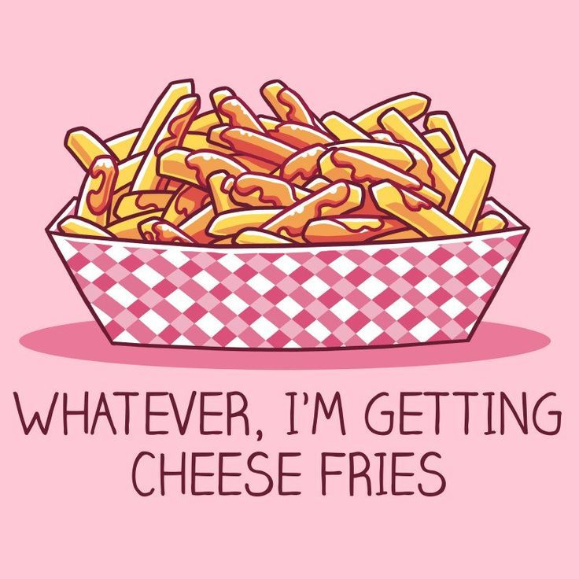

☾ Cheese Fries ☾
ㅤ

Potrzebne rzeczy
Ziemniak, Ser, Olej
Głęboka patelnia, nóż, deska
sól
ㅤ
Etapy Przyrządzania:
ziemniaki pokrój w cieniutkie kwadartowe patyki. Na patelni rozgrzej olej do ok. 200 C°
i dodaj pokroione ziemniaki, jak się zarumienią i wyłóż na tależu z ręcznikiem.
Po osużeniu frytek dodaj do nich szczypte soli i dużo sera (najlepiej chedar)
następnie włóż do mikrofalówki żeby ser się rospóścił.
SMACZNEGO!